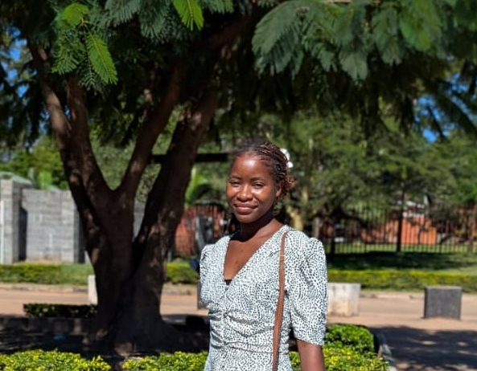

I am a Computer Scientist who is passionate about using technology to solve real-world problems and create innovative solutions that make a positive impact on society.
I am committed to staying up-to-date with the latest developments in the field of computer science. I am always eager to learn and grow and I am excited to see where my career will take me in the future.I'm always open to discussing new projects, creative ideas, or opportunities to be part of your visions.I enjoy reading books, playing volleyball, and exploring new technologies.
Reading allows me to expand my knowledge and imagination, while playing volleyball helps me stay active and socialize with friends. Exploring new technologies is a passion of mine, as it keeps me up-to-date with the latest advancements in the field of computer science and allows me to continuously learn and grow.
Phone: 0969102041